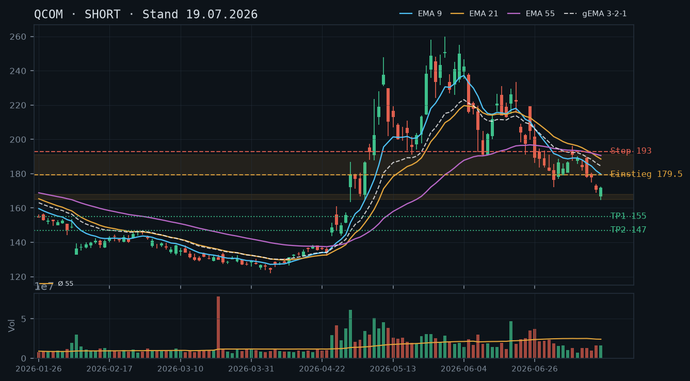
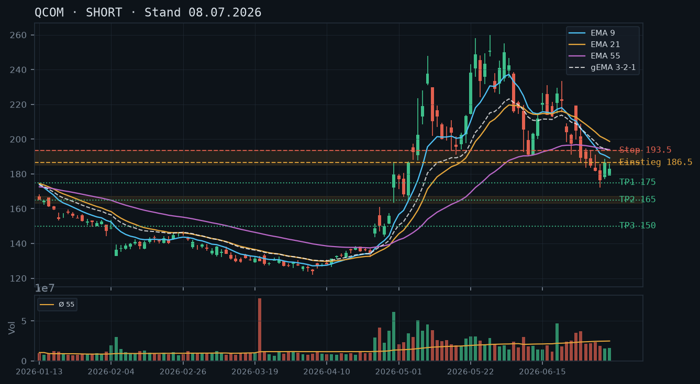

QCOM
Analyse-Historie · neueste zuerstQCOM zeigt erste Stabilisierungsansätze nach dem langen Abwärtstrend, aber noch keine bestätigte Trendwende – Stillhalter-Setup noch nicht reif, Setup-Qualität bleibt unter Short-Schwelle.

1 · Trendstruktur
Der Abwärtstrend vom Hoch bei 259,92 (29.05.) bis zum Tief bei 164,77 (17.07.) ist strukturell noch intakt: Die Reihe fallender Hochs und Tiefs bleibt ungebrochen. Allerdings zeigen die letzten fünf Kerzen (17.07.–22.07.) einen Versuch der Stabilisierung zwischen 164,77 und 178,65 – ein erstes, noch unbestätigtes Konsolidierungsmuster. Das bisherige Short-Ziel aus der Analyse vom 08.07. (165,00) wurde mit dem Tief 164,77 am 17.07. faktisch erreicht; das Setup ist damit abgearbeitet. Das Short-Ziel der Analyse vom 19.07. (155,00) wurde nicht erreicht – der Kurs hat stattdessen bei ~164–165 gedreht.
2 · Candlestick-Formationen
Die Kerze vom 17.07. (Tief 164,77, Close 171,78) bildet einen bullishen Hammer-Versuch mit langem Docht nach unten – ein mögliches Erschöpfungssignal, aber auf unterdurchschnittlichem Volumen (rel_vol 0,68). Die Folgekerzen 20.–22.07. bestätigen keine klare Richtung: enge Körper, keine nennenswerte Dynamik. Die gestrige Kerze (22.07.) zeigt eine Inside-Bar mit Close bei 175,63 – Abwarten angesagt.
3 · EMA-Lage (9 / 21 / 55)
EMA9 (176,71) ≈ aktueller Kurs (176,00), EMA21 (184,77) und EMA55 (188,81) liegen deutlich darüber – der EMA-Verbund gema_321 (181,41) ebenfalls. Alle drei EMAs fallen noch. Der Kurs hat erstmals seit Wochen den EMA9 von unten getestet, was die Konsolidierung unterstreicht. Ein bullisher EMA-Cross (EMA9 über EMA21) ist noch weit entfernt – dieser Bereich (~184–189) bildet den nächsten Widerstandscluster. Die Short-Empfehlungen vom 08.07. und 19.07. werden durch die aktuelle EMA-Lage strukturell bestätigt, aber das kurzfristige Momentum-Signal hat sich neutralisiert.
4 · Trade-Setup
| Richtung | Kein Trade |
| Einstieg | – |
| Stop | – |
| Ziel | – |
| CRV | – |
5 · Stillhalter (max. 12 Tage)
Weder ein CSP noch ein CC bieten aktuell ein sauberes Setup: Der Boden bei 164–165 ist noch unbestätigt (erst ein Test, geringes Volumen), sodass das Andienungsrisiko beim CSP zu hoch ist. Für einen CC fehlt zum einen der Aktienbestand (laut IBKR: 0 Aktien, keine Optionen), zum anderen liegt der nächste Widerstand beim fallenden EMA-Cluster (184–189) – ein Naked Call ist wegen des unbegrenzten Risikos nicht empfehlenswert. Die Marktstruktur ist zu unklar für ein Stillhalter-Engagement.
Ausführliche Analyse vom 23.07.2026 anzeigen
QCOM – Detailanalyse 23.07.2026
1. Trendstruktur & Abgleich mit früheren Analysen
Die Short-Empfehlung vom 08.07.2026 (Einstieg 186,50, Ziel 165,00, CRV 3,0:1) hat sich als präzise erwiesen: Das Tief vom 17.07. bei 164,774 hat das Kursziel von 165,00 faktisch exakt erreicht. Diese Analyse ist damit erfolgreich abgearbeitet – die Position sollte längst geschlossen oder stark reduziert sein.
Die Analyse vom 19.07.2026 (Einstieg 179,50, Ziel 155,00, CRV 3,1:1) ist dagegen nicht aufgegangen: Statt eines weiteren Abwärtsschubs nach 155,00 hat QCOM bei ~164–165 eine vorläufige Unterstützung gefunden und sich auf ~176 erholt. Das Ziel 155,00 bleibt theoretisch möglich, aber der Kurs hat das Setup invalidiert – ein Reentry auf der Short-Seite wäre aktuell nicht gerechtfertigt.
Strukturell: Der übergeordnete Abwärtstrend (Hoch 259,92 am 29.05. → Tief 164,774 am 17.07.) ist mit einer Bewegung von ~37% in knapp sieben Wochen extrem ausgeprägt. Die Reihe fallender Hochs bleibt intakt: 259,92 → 248,82 → 233,44 → 221,93 → 196,09 → 188,67 → 178,65. Das letzte Schwing-Hoch liegt bei 178,65 (22.07.) – erst ein Ausbruch darüber mit Volumen würde die Struktur in Frage stellen. Wichtige Levels im Überblick:
- Support-Zone 164–165: Tief 17.07. bei 164,774 + Tief 16.07. bei 168,99 – bisher erst einmal getestet, unbestätigt als tragfähige Unterstützung
- Widerstand 178–179: mehrfache Reaktionen (14.07. Tief, 20.–22.07. Highs), aktuell unmittelbar relevant
- EMA-Cluster-Widerstand 184–191: EMA9 (176,71), gema_321 (181,41), EMA21 (184,77), EMA55 (188,81) – alle fallend, starkes Deckel-Niveau
- Nächster struktureller Support: April-Konsolidierung 127–135 (weit entfernt, nur relevant bei Trendfortsetzung nach unten)
2. Candlestick-Formationen
Die Kerze vom 17.07. (Open 166,64 / High 172,39 / Low 164,774 / Close 171,78) zeigt einen markanten unteren Docht von ~7 Punkten bei einem Körper von ~5 Punkten – ein klassisches Hammer-Muster. Allerdings: rel_volumen nur 0,68 (deutlich unter Schnitt), was die Überzeugungskraft des Signals erheblich mindert. Hammer auf unterdurchschnittlichem Volumen = schwaches Signal.
Die Kerzen 20.–22.07. sind ausnahmslos Inside-Bars bzw. enge Konsolidierungskerzen. Das Volumen bleibt extrem niedrig: 0,41 / 0,58 / 0,35 – letzteres ist das niedrigste relative Volumen im gesamten 90-Kerzen-Datensatz. Diese Volumen-Austrocknung kann ein Zeichen von Verkäufer-Erschöpfung sein, ist aber auch typisch für eine Pause vor der nächsten Abwärtswelle. Ohne Volumenbestätigung eines Ausbruchs nach oben fehlt die bullishe Überzeugung.
3. EMA-Analyse
Aktuelle EMA-Werte (Stand Schluss 22.07.): EMA9 = 176,71 / EMA21 = 184,77 / EMA55 = 188,81 / gema_321 = 181,41. Der Kurs (176,00 laut IBKR-Snapshot) liegt unterhalb aller EMAs. Die Reihenfolge EMA9 < EMA21 < EMA55 ist klassisch bärisch. Alle drei EMAs verlaufen weiterhin abwärts – kein Kreuzungssignal in Sicht.
Bemerkenswert: EMA9 und Kurs nähern sich an (~176 vs. 176,71), was bedeutet, dass der kurzfristige Durchschnitt erstmals seit Wochen vom Kurs erreicht wird. Das ist kein bullishes Signal per se, zeigt aber, dass die extreme Überdehnung nach unten (Kurs weit unter allen EMAs) nachlässt. Für ein valides Long-Signal bräuchten wir: (1) EMA9 dreht nach oben, (2) Kurs schließt sauber über EMA9 mit überdurchschnittlichem Volumen, (3) EMA9 beginnt EMA21 anzulaufen. Davon sind wir noch entfernt.
4. Trade-Setups (Alternative Szenarien)
Setup A – Abwarten auf Bodenbestätigung (bevorzugt): Kein Trade aktuell. Warten auf einen Close mit erhöhtem Volumen (rel_vol > 1,3) über dem Schwing-Hoch 178,65. Erst dann wäre ein vorsichtiger Long-Ansatz mit Ziel EMA21 (~184) und Stop unter 172,00 (CRV ~1,6:1, suboptimal) möglich. Dieses Setup existiert noch nicht.
Setup B – Short-Reentry bei EMA-Retest: Sollte der Kurs in die EMA9/gema_321-Zone (179–182) zurücklaufen ohne Volumensignal, wäre ein Limit-Short mit Stop über 185,50 und Ziel 164–165 denkbar (CRV ~2,4:1). Voraussetzung: kein vorheriger Close über 178,65 mit Volumen. Dieses Setup aktiviert sich nur bei entsprechender Marktbewegung.
Setup C – Direkter Breakdown unter 168,99: Bei einem Close unter dem Tief vom 16.07. (168,99) auf erhöhtem Volumen wäre die Bodenbildung gescheitert und Setup B würde sofort aktiv, mit neuem Ziel ~155. Dieses Szenario beobachten.
5. Stillhalter-Analyse (Schwerpunkt)
Cash-Secured Put: Ein CSP ist aktuell nicht empfehlenswert. Begründung: Der einzige Support-Bereich bei 164–165 wurde erst einmal und auf schwachem Volumen getestet – er gilt als unbestätigter Bereich. Ein CSP mit Strike unter 165 hätte zwar technisch den Support als Puffer, aber: (a) Die Zone ist unzuverlässig, (b) das Andienungsszenario bei 160–165 wäre unangenehm, da kein starker struktureller Boden darunter existiert bis ~135, (c) IBKR-Snapshot bestätigt: keine Aktien, keine bestehenden Positionen – es gibt keine strategische Notwendigkeit, sich hier zu positionieren. Warten auf eine zweite Bestätigung des Supports (zweiter Test mit Volumen und bullisher Kerze) ist die disziplinierte Entscheidung.
Covered Call: Kein Aktienbestand (0 Aktien laut IBKR-Snapshot), daher kein CC möglich. Ein Naked Call auf den EMA-Cluster-Widerstand bei ~189–192 wäre technisch die Zone, aber das Risikoprofil ist für den vorgegebenen Rahmen (moderat) nicht akzeptabel – insbesondere da eine Bodenbildung noch möglich ist und eine Short-Squeeze-Bewegung den Call schnell ins Geld treiben könnte.
Was die Lage braucht, um Stillhalter-Geschäfte zu rechtfertigen:
- CSP: Zweiter Test der 164–165-Zone mit schließender Bullish-Engulfing-Kerze auf rel_vol > 1,5 → dann CSP-Strike bei 157,50–160,00 (Puffer ~9–10%), Verfall maximal 31.07.2026. In der Optionskette: Prämie sollte mindestens 1,20–1,50 betragen bei diesem Puffer; Delta Ziel ~0,15–0,20; auf ausreichendes Open Interest achten.
- CC nach Aktienkauf: Erst wenn Aktienbestand aufgebaut und Kurs über EMA9 stabilisiert → CC-Strike bei 189–192 (über EMA21/EMA55-Cluster), Verfall 31.07. oder 01.08.2026 (nächster Standard-Freitag wäre 25.07., 8 Tage; übernächster 01.08., 9 Tage). Delta-Ziel ~0,20–0,25.
Roll-/Anpassungslogik für zukünftige Positionen: Ein etwaiger zukünftiger Short-Put würde einen Roll-Trigger auslösen, wenn der Kurs mehr als 3% über den Strike fällt UND der Put ein Delta > 0,40 erreicht – dann Roll-Down-and-Out auf tieferen Strike mit gleichem oder längerem Verfall (max. 12 Tage) anstreben, sofern die Prämie den Rollverlust kompensiert.
QCOM befindet sich in einem beschleunigten Abwärtstrend – die Short-Empfehlung vom 08.07. ist voll intakt, alle EMAs fallen, ein CSP kommt noch nicht infrage.

1 · Trendstruktur
QCOM zeigt eine klare Abfolge fallender Hochs und fallender Tiefs seit dem All-Time-High-Bereich um 258 (29.05.). Das letzte bestätigte Swing-Hoch liegt bei ~196 (09.07.), das letzte Tief bei ~165 (17.07. Intraday-Low 164,77). Der Kurs ist seit dem Hoch vom 18.06. (229,42) um über 25% gefallen – Abwärtstrend intakt und beschleunigt. Die Zone 165–168 ist bislang unbestätigter Unterstützungsbereich (einmaliger Test).
2 · Candlestick-Formationen
Die letzte verfügbare Kerze (17.07.) zeigt eine Erholungskerze: Open 166,64 → Close 171,78, mit einem Intraday-Tief bei 164,77. Das ist eine potenzielle Hammer-artige Struktur, allerdings auf niedrigem Volumen (rel. Volumen 0,68 – deutlich unter Schnitt). Die Kerze vom 16.07. (rel. Vol. 0,66, Close 170,61) war eine schwache Abwärtskerze ohne Panik-Volumen. Kein bullishes Umkehrsignal mit Bestätigung vorhanden.
3 · EMA-Lage (9 / 21 / 55)
EMA-Reihenfolge (17.07.): EMA9 = 179,72 | EMA21 = 188,56 | EMA55 = 190,61 | gema_321 = 184,48. Klassische Bären-Staffelung: EMA9 < EMA21 < EMA55, alle fallend. Der Kurs (171,78) notiert deutlich unterhalb aller drei EMAs – der Abstand zum EMA9 beträgt rund 8 Punkte. Keinerlei Anzeichen einer Annäherung oder Kreuzung. Der gema_321 (184,48) fungiert als dynamischer Deckel.
4 · Trade-Setup
| Richtung | Short |
| Einstieg | 179.50 (Limit-Short beim Retest EMA9 / gema_321-Zone ~179–184) |
| Stop | 193.00 (über letztem Swing-Hoch 09.07. bei 196,09, Puffer) |
| Ziel | 155.00 (nächste potenzielle Unterstützungszone, April-Ausbruchniveau) |
| CRV | 3.1 : 1 |
5 · Stillhalter (max. 12 Tage)
Im laufenden Abwärtstrend ohne bestätigte Bodenbildung kommt ein Cash-Secured Put noch nicht infrage – das Andienungsrisiko ist bei fehlender Support-Konfluenz zu hoch. Ein Covered Call oberhalb der EMA-Cluster-Zone wäre das passende Stillhalter-Instrument, setzt jedoch einen Aktienbestand voraus. Laut IBKR-Snapshot sind keine Aktien und keine Optionspositionen vorhanden, daher ist ein CC nicht umsetzbar und ein Naked Call wäre aufgrund des unbegrenzten Risikos nicht empfehlenswert.
Ausführliche Analyse vom 19.07.2026 anzeigen
QCOM – Detailanalyse 19.07.2026
Abgleich mit der Analyse vom 08.07.2026
Die Short-Empfehlung vom 08.07. mit Einstieg 186,50, Stop 193,50 und Ziel 165,00 (CRV 3:1) ist voll aufgegangen. Der Kurs ist seitdem von ~186 auf ein Intraday-Tief von 164,77 (17.07.) gefallen – das primäre Ziel wurde damit faktisch erreicht. Die damalige Einschätzung 'fallende EMAs und bearishes Momentum' hat sich vollständig bestätigt. Der Abwärtstrend ist nicht nur intakt, sondern hat sich beschleunigt.
1. Trendstruktur
QCOM durchläuft seit dem Hoch bei 258,00 (29.05.) eine mehrstufige Distribution. Markante Strukturpunkte:
- Swing-Hoch 1: 258,00 (29.05.) – absolutes Top im Datenfenster
- Swing-Hoch 2: 229,42 (18.06.) – tieferes Hoch, Trend bestätigt
- Swing-Hoch 3: 196,09 (09.07.) – erneut tieferes Hoch
- Swing-Tief 1: 215,00 (05.06., approx.) → Swing-Tief 2: 172,12 (02.07.) → Swing-Tief 3: 164,77 (17.07. Intraday) – fallende Tiefs
Die Zone 165–168 ist ein unbestätigter Support-Bereich (einmaliger Intraday-Test am 17.07. ohne Schluss-Bestätigung auf Weekly-Basis). Darunter liegt das nächste relevante Niveau bei ca. 155–158, was dem Ausbruchslevel von Ende April 2026 entspricht. Ein Überwinden von 164,77 nach unten würde weiteres Abwärtspotenzial bis 155 eröffnen.
Auf der Oberseite: Widerstand bei 179–184 (gema_321 + EMA9-Cluster), dahinter 188–192 (EMA21/EMA55-Block). Ein Schlusskurs über 193 würde die Trendstruktur formal in Frage stellen.
2. Candlestick-Formationen
Die letzten vier Kerzen zeigen einen graduellen Ausverkauf ohne Kapitulation:
- 14.07.: Starke Abwärtskerze, Close 178,10, rel. Vol. 0,52 – unterdurchschnittliches Volumen, kein Panik-Selling
- 15.07.: Enge Range, Close 177,98, rel. Vol. 0,38 – Volumen-Dürre, kein Kaufinteresse
- 16.07.: Abwärtskerze, Close 170,61, rel. Vol. 0,66 – leichter Volumen-Anstieg, aber noch moderat
- 17.07.: Mögliche Hammer-Struktur (Tief 164,77, Close 171,78), rel. Vol. 0,68 – die Erholung erfolgt auf schwachem Volumen, was keine bullishe Trendumkehr-Bestätigung darstellt. Erst ein Follow-Through mit Volumen > 1,2x Schnitt würde Gewicht verleihen.
Fazit: Kein bestätigtes bullishes Reversal-Muster. Die Erholungskerze vom 17.07. ist ein Warnsignal für Shorts (möglicher Dead-Cat-Bounce), aber kein Ausstiegssignal.
3. EMA-Analyse
Stand 17.07.2026 (letzte Kerze):
- EMA9: 179,72 – fällt steil
- EMA21: 188,56 – fällt
- EMA55: 190,61 – beginnt zu fallen (erstmals seit April unter EMA21)
- gema_321: 184,48 – fällt, dynamischer Widerstandscluster
Die Reihenfolge EMA9 < EMA21 < EMA55 ist eine klassische Bären-Staffelung. Bemerkenswert: EMA21 (188,56) und EMA55 (190,61) sind nah beieinander und komprimieren sich – dies ist kein Artefakt, sondern spiegelt die rapide Kurskorrektur wider, die den EMA55 von oben 'einholt'. Der Kurs notiert rund 8 Punkte unter EMA9 – ausreichend Abstand, um einen Bounce-Retest als Short-Entry zu nutzen, bevor der Trend sich fortsetzt.
4. Trade-Setups (A/B/C)
Setup A – Bevorzugt: Retest-Short an EMA9/gema_321
- Einstieg: 179,50 Limit (Retest EMA9 ~179,72 / gema_321 ~184 als obere Grenze; Limit knapp darunter)
- Stop: 193,00 (über Swing-Hoch 09.07. bei 196,09 mit Puffer)
- Ziel 1: 164,77 (letztes Intraday-Tief) → CRV: 0,9:1 – zu eng als primäres Ziel
- Ziel 2: 155,00 (April-Ausbruchniveau) → CRV: (179,50–155,00)/(193,00–179,50) = 24,50/13,50 = 1,8:1
- Ziel 3: 147,00 (nächste Chart-Unterstützung, März-Range-Top) → CRV: (179,50–147,00)/13,50 = 2,4:1
Setup B – Aggressiv: Breakout-Short unter 164,77
- Einstieg: 164,00 Stop-Sell (Bruch unter Intraday-Tief 17.07.)
- Stop: 172,00 (über Close 17.07.)
- Ziel 1: 155,00 → CRV: 9,00/8,00 = 1,1:1 – zu eng
- Ziel 2: 147,00 → CRV: 17,00/8,00 = 2,1:1
- Nachteil: Schlechtes Entry-Momentum, Risiko eines erneuten Bounce nach Intraday-Tief-Test
Setup C – Konservativ: Warten auf Bestätigung
Warten auf einen Tagesschluss unter 164,77 mit Volumen > 1,5x Schnitt als Trend-Bestätigung, dann Setup B mit besserem Confidence-Level aktivieren. Auf Kosten des Entry-Preises, aber mit höherer Trefferwahrscheinlichkeit.
Bevorzugtes Setup: A – Retest-Short mit definierten Zonen. Einstieg nur bei Kurs-Rückkehr in die EMA-Zone, nicht auf aktuellem Niveau.
5. Stillhalter-Analyse (Schwerpunkt)
Cash-Secured Put (CSP) – Nicht empfohlen
Ein CSP wäre bei QCOM aktuell strukturell inkonsistent. Die Begründung:
- Der einzige potenzielle Strike-Bereich unterhalb des aktuellen Kurses liegt bei 155–158 (April-Ausbruchniveau). Jedoch ist dies gleichzeitig das primäre Short-Kursziel aus Setup A – ein CSP mit Strike 155 wäre damit eine direkte Wette gegen das eigene Trade-Setup.
- Die Zone 165–168 ist lediglich einfach getestet (unbestätigt) und trägt keine ausreichende technische Last für ein Andienungsszenario.
- Im beschleunigten Abwärtstrend ohne Bodenbildungs-Signale mit Volumenbestätigung ist das Andienungsrisiko (Kauf bei 155, Kurs fällt weiter auf 140) nicht akzeptabel.
- Roll-Trigger für zukünftigen CSP: Erst wenn ein Tages-Schluss oberhalb des EMA9 mit Volumen > 1,5x Schnitt erfolgt und die EMA-Staffelung sich komprimiert (EMA9 nähert sich EMA21), ist eine Bodenbildung technisch plausibel. Dann wäre ein CSP auf 155/152-Strike (Puffer ~9% zum damaligen Kurs) prüfenswert.
Covered Call (CC) – Strukturell interessant, aber nicht umsetzbar
Technisch wäre ein CC mit Strike im Bereich 185–190 sinnvoll (oberhalb EMA9 ~179, gema_321 ~184, gut im Widerstandsblock EMA21/EMA55 bei 188–191). Der prozentuale Puffer zum aktuellen Kurs (170,61) beträgt bei Strike 185 ca. 8,4% – angemessen für 7–10 DTE. Das Andienungsszenario (Abgabe bei 185) wäre aus aktueller Sicht akzeptabel, da 185 mitten im Bären-EMA-Block liegt und ein Erreichen dieses Levels eine signifikante Trendumkehr voraussetzte.
Problem laut IBKR-Snapshot (12:09 Uhr): Kein Aktienbestand vorhanden (aktien_stueck = 0). Ein CC setzt mindestens 100 Aktien je Kontrakt voraus. Ohne Aktienbestand wäre dies ein Naked Call mit theoretisch unbegrenztem Verlustrisiko – bei moderater Risikotoleranz nicht vertretbar.
Was in der Optionskette zu prüfen wäre (manuell, da keine IBKR-Optionsdaten vorliegen):
- Strike 185 oder 187,50, Verfall 25.07.2026 (6 DTE) oder 01.08.2026 (13 DTE – leicht außerhalb des 12-Tage-Rahmens, daher Verfall 25.07. bevorzugt)
- Prämie: Sollte bei gegebener IV mindestens 1,5–2,0% des Aktienpreises betragen (>2,50 USD Mid), um den Puffer zu rechtfertigen
- Delta: Angestrebt –0,20 bis –0,28 für akzeptables CRV
- Liquidität: Spread < 0,30, Open Interest > 500 Kontrakte
Bestand
Laut IBKR-Snapshot vom 19.07.2026 12:09 Uhr: Keine Aktienposition, keine offenen Optionspositionen in QCOM. Kein Roll-Bedarf.
QCOM befindet sich in einem intakten Abwärtstrend mit fallenden EMAs und bearishem Momentum – Short-Setups bieten das bessere CRV.

1 · Trendstruktur
QCOM hat nach dem Hoch bei ~258 USD (26. Mai) einen klaren Abwärtstrend ausgebildet: Die Sequenz fallender Hochs (258 → 251 → 233 → 229 → 221 → 209 → 204 → 188 → 186) und fallender Tiefs (235 → 224 → 213 → 199 → 191 → 183 → 172) ist intakt. Der Kurs notiert am 07. Juli bei 182,97 – weit unterhalb des ATH und unter allen drei EMAs. Wichtige Supports liegen bei ~172 (07. Juli-Tief), ~164–165 (Ausbruchniveau April), darunter ~150. Widerstand: 190–195 (EMA55-Zone), 200–205 (EMA21), 215–220.
2 · Candlestick-Formationen
Die letzten Kerzen zeigen eine Abfolge roter Tage: Nach dem Einbruch vom 26. Juni (rel. Vol. 1,56) folgten kontinuierlich tiefere Schlusskurse. Am 02. Juli ein schwacher Bounce-Versuch mit engem Körper bei 176,25 (Doji-ähnlich, aber lower low). Am 06. Juli Erholungskerze (+10,23 Punkte intraday, Schluss 186,48) – bullischer Versuch, der aber keine Bestätigung durch Volumen brachte (rel. Vol. nur 0,63). Am 07. Juli Rückfall auf 182,97 – der Bounce wurde verkauft, bearishes Signal.
3 · EMA-Lage (9 / 21 / 55)
Die EMA-Konstellation ist klar bearish: EMA9 (189,17) < EMA21 (198,70) < EMA55 (193,99) – wobei der EMA55 den EMA21 von oben schneidet und alle drei fallen. Der gema_321 liegt bei 193,15, deutlich über dem aktuellen Kurs (182,97), was den Abstand zur Widerstandszone unterstreicht. Alle EMAs fallen, der Kurs notiert ~10 Punkte unter dem EMA9 – kein Anzeichen einer nachhaltigen Erholung.
4 · Trade-Setup
| Richtung | Short |
| Einstieg | 186.50 (Limit beim Retest des 06.-Juli-Hochs/EMA-Widerstand) |
| Stop | 193.50 (über EMA55 und letztem Swing-Hoch) |
| Ziel | 165.00 (Ausbruchsniveau April, nächste Unterstützungszone) |
| CRV | 3.0 : 1 |
Ausführliche Analyse vom 08.07.2026 anzeigen
QCOM – Detailanalyse (08. Juli 2026)
1. Trendstruktur
QCOM hat nach dem Allzeithoch im Analysezeitraum bei 258,00 USD (26. Mai 2026) einen ausgeprägten Abwärtstrend entwickelt. Die Trendstruktur zeigt eine klassische Folge von Lower Highs / Lower Lows:
- Hoch 258,00 (26.05.) → Hoch 251,02 (29.05.) → Hoch 238,02 (01.06.) → Hoch 255,09 (03.06.) – kurzfristige Gegenbewegung, danach neue Tiefs
- Entscheidender Bruch: Kurs fiel von 250 auf 191 (10. Juni, Low 190,10)
- Erholung bis ~226 (15.–18. Juni), danach weiterer Absturz
- Am 26. Juni: Einbruch unter 190 mit rel. Vol. 1,56 – Verkaufsdruck bestätigt
- Tiefstes Low bisher: 172,12 (02. Juli 2026)
Wichtige Support-Levels: 172 (aktuelles 52W-Tief im Datenset), 164–165 (Ausbruchsbasis April), 150 (April-Hoch vor dem Pump), 145–148 (Pre-Earnings-Basis).
Wichtige Widerstände: 186–188 (06. Juli-Hoch), 190–195 (EMA55-Bereich), 200–205 (EMA21-Zone), 210–215 (gema_321-Bereich), 220–226 (letzte große Gegenbewegung).
2. Candlestick-Formationen
Die jüngsten Kerzen erzählen eine klare Geschichte:
- 26. Juni: Große rote Kerze (Open 201,70 / Close 189,39), Intraday-Range von ~22 Punkten, rel. Vol. 1,56 – institutioneller Abverkauf.
- 29.–30. Juni / 01.–02. Juli: Fortsetzung des Abwärtstrends, jede Kerze mit tieferem Low und tieferem Close. Am 02. Juli Low bei 172,12 – mögliche kurzfristige Capitulation.
- 06. Juli: Bullische Erholungskerze (Open 178,13, High 188,67, Close 186,48) – ABER rel. Vol. nur 0,63 (deutlich unter Schnitt). Schwacher Bounce ohne Überzeugung.
- 07. Juli: Rote Kerze (Open 179,00, High 185,88, Close 182,97) – der Bounce vom Vortag wurde nicht bestätigt, Kurs fiel zurück. Bearishes Engulfing-Signal in Miniaturform.
Die Erholung der letzten zwei Tage wirkt wie ein Dead-Cat-Bounce ohne Volumenunterstützung – typisch für Retracements in Abwärtstrends.
3. EMA-Analyse
Die EMA-Konstellation ist eindeutig bearish:
- EMA9: 189,17 – fallend, deutlich über Kurs (182,97), fungiert als dynamischer Widerstand
- EMA21: 198,70 – fallend, ~16 Punkte über Kurs
- EMA55: 193,99 – ebenfalls fallend, liegt zwischen EMA9 und EMA21 – ungewöhnliche Konstellation, die zeigt, wie stark der Abwärtstrend die kürzeren EMAs nach unten gezogen hat
- gema_321: 193,15 – gewichteter Verbund liegt ~10 Punkte über dem Kurs und fällt
Der Kurs ist 6 Punkte unter dem EMA9, alle EMAs fallen mit zunehmendem Abstand voneinander – kein Zeichen einer Trendwende. Eine bullische Umkehr würde mindestens einen Schlusskurs über EMA9 (189+) mit erhöhtem Volumen (>1,3x Schnitt) erfordern.
4. Trade-Setups
Setup A – Short bei Retest (bevorzugt):
Einstieg: 186,50 (Limit-Order beim Retest des 06. Juli-Hochs und der Zone 185–188, knapp unter EMA9)
Stop: 193,50 (über EMA55 bei 193,99 und Puffer)
Ziel 1: 175,00 (über letztem Low bei 172,12) → CRV 1,6:1
Ziel 2: 165,00 (Ausbruchszone April) → CRV 3,0:1
Ziel 3: 150,00 (April-Resistance-Cluster) → CRV 5,2:1
Empfehlung: Bei Erreichen von Ziel 1 halbe Position schließen, Stop auf BE ziehen.
Setup B – Short-Trigger bei Bruch unter 181,60:
Einstieg: 181,00 (Stop-Sell unter dem 01.-Juli-Low bei 181,60)
Stop: 188,00 (über 06. Juli-High)
Ziel 1: 172,00 (letztes Tief) → CRV 1,3:1
Ziel 2: 165,00 → CRV 2,3:1
Einstieg nur, wenn Volumen >1,2x Schnitt beim Bruch.
Setup C – Long (konträr, nur als Spekulation):
Einstieg: 172,50 (Stop-Buy über 172,12 + Puffer, bei V-Umkehr mit Volumen >1,5x)
Stop: 168,00
Ziel: 190,00 → CRV 3,9:1
Nur bei starker Reversal-Kerze mit hohem Volumen handelbar – aktuell NICHT empfohlen.
Fazit: Das Risiko-Ertrags-Verhältnis spricht klar für Short-Positionen. Der Trend ist intakt, die EMAs sind bearish ausgerichtet, Bounces erfolgen mit unterdurchschnittlichem Volumen. Setup A bei Retest auf 186–188 bietet den günstigsten Einstieg mit definiertem Risiko.